Otoyo, Kochi: things to do, food and stays
Otoyo · Kochi
Otoyo
Highlighted on the Kochi map.
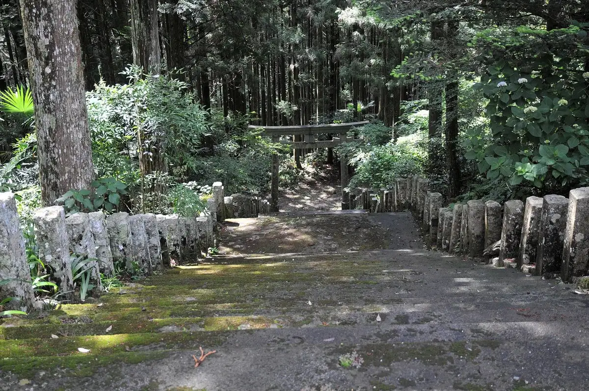
Stay
ゆとりすとパークおおとよ
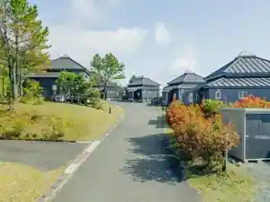
Yutorisuto Park Otoyo
Inn in Nakamuradaio, Otoyo with scenic views.
大豊の森
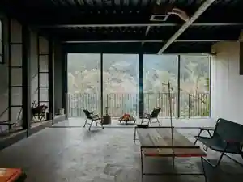
Taiho No Mori
Inn in Wada, Otoyo with scenic views.
Dining
ひばり食堂
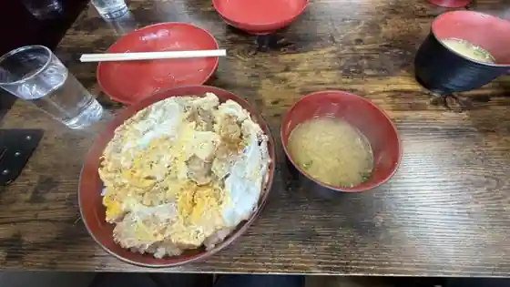
Hibari Shokudo
永渕食堂 シャンティ
Nagafuchi Shokudo Shantei
グリーングラス
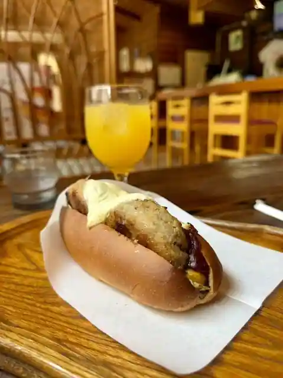
Guringurasu
立川パーキングエリア（下り線）スナックコーナー
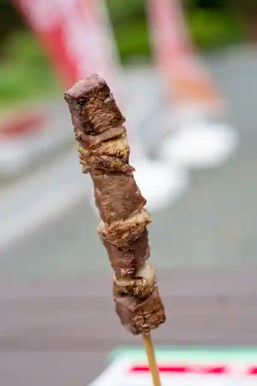
Tachikawa Pakingueria (Kudari Sen) Sunakkukona
土佐北川駅 駅前食堂
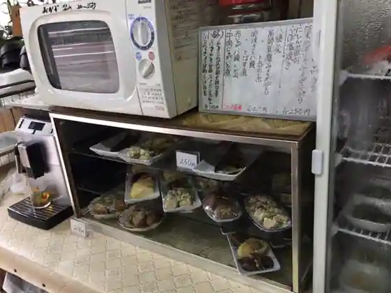
Tosa Kitagawa Eki Ekimae Shokudo
山荘 梶ヶ森
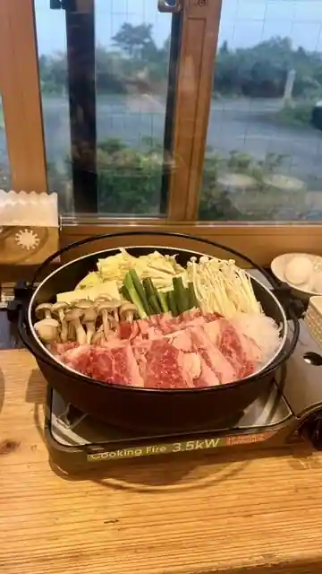
Sanso Kaji Ke Mori
きっちん なかとよや
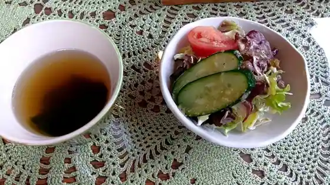
Kitchin Nakatoyoya
お山の宿 みちつじ
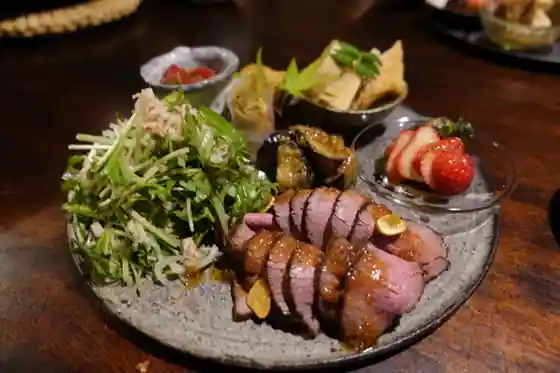
O Yama No Yado Michitsuji
大田口カフェ
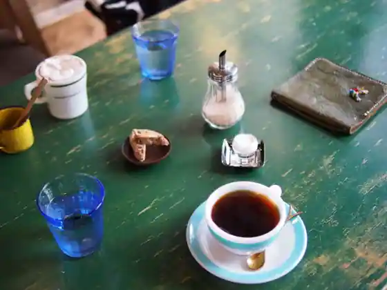
Ota Kuchi Cafe
大豊ラーメン
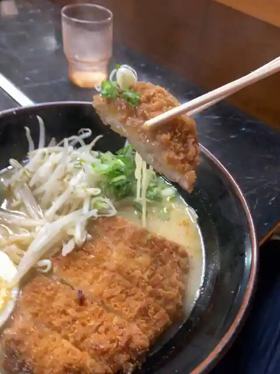
Taiho Ramen
こんどう食堂
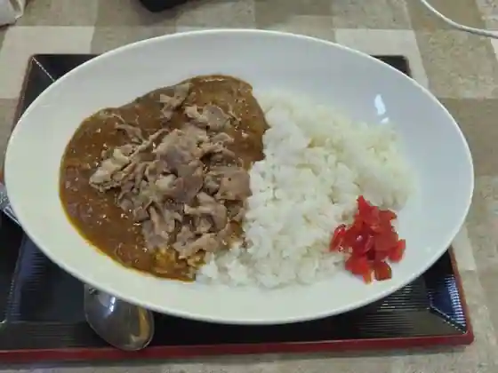
Kondo Shokudo
気まぐれ喫茶 ぼんぼん
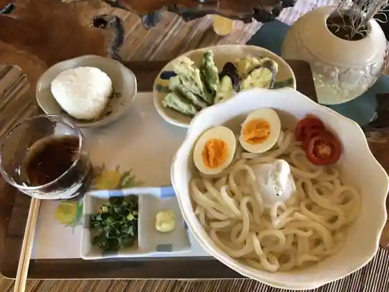
Kimagure Kissa Bonbon
喜群
Ki Gun
夢工房
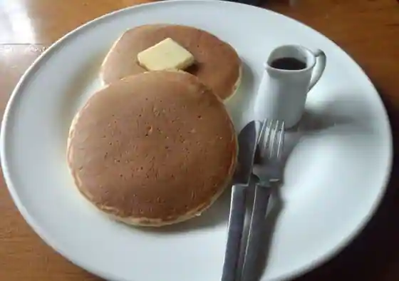
Yumekobo
立川御殿茶屋
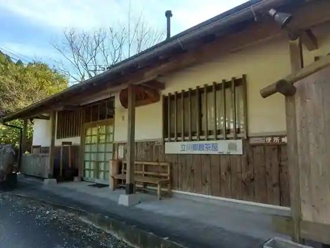
Tachikawa Goten Chaya
ムラタペンション
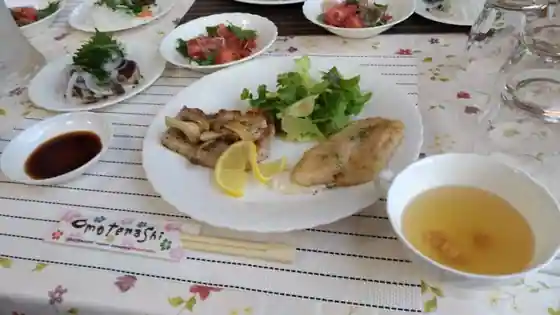
Murata Pension
Sights
Buraku Tera
Ryuo Falls
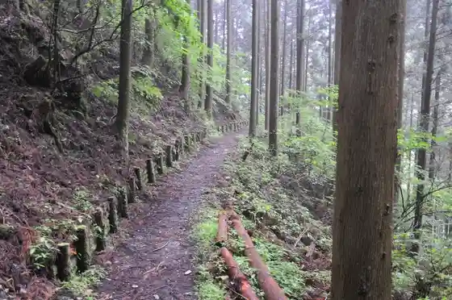
Otoyo Town Hall
Roadside Station Osugi
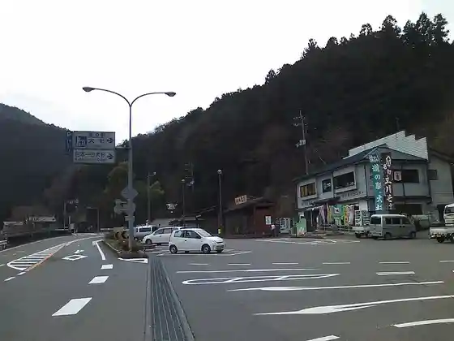
Hachi Une no Chichi Icho
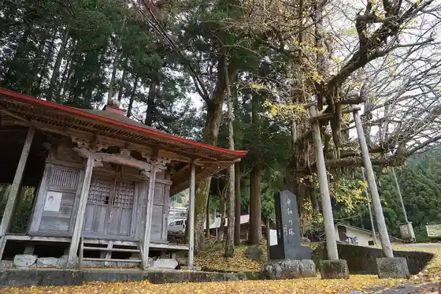
Kyu Yoshinogawa Hashi
Kajigamori